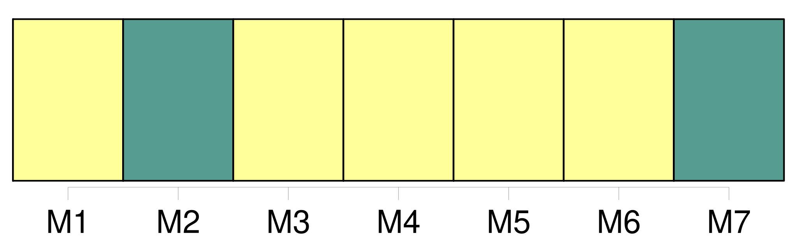

Longueur nb maillons : 13 mentions |
  |
Les publications de mariage des militaires et employés à la suite des armées, seront faites au lieu de leur dernier domicile elles seront mises en outre, vingt-cinq jours avant [la célébration du mariage] , à l'ordre du jour du corps, pour les individus qui tiennent à un corps ; et à celui de l'armée ou du corps d'armée, pour les officiers sans troupes, et pour les employés qui en font partie. [1 phrases]
Immédiatement après l'inscription sur le registre, de l'acte de [célébration du mariage] l'officier chargé de la tenue du registre en enverra une expédition à l'officier de l'état civil du dernier domicile des époux. [153 phrases]
Depuis la majorité fixée par l'article 148, jusqu'à l'âge de trente ans accomplis pour les fils, et jusqu'à l'âge de vingt-cinq ans accomplis pour les filles, l'acte respectueux prescrit par l'article précédent, et sur lequel il n'y aurait pas de consentement au mariage, sera renouvelé deux autres fois, de mois en mois ; et un mois après le troisième acte, il pourra être passé outre à [la célébration du mariage] [1 phrases]
Après l'âge de trente ans, il pourra être, à défaut de consentement sur un acte respectueux, passé outre, un mois après, à [la célébration du mariage] [3 phrases] En cas d'absence de l'ascendant auquel eût dû être fait l'acte respectueux, il sera passé outre à [la célébration du mariage] , en représentant le jugement qui aurait été rendu pour déclarer l'absence, ou, à défaut de ce jugement, celui qui aurait ordonné l'enquête, ou, s'il n'y a point encore eu de jugement, un acte de notoriété délivré par le juge de paix du lieu où l'ascendant a eu son dernier domicile connu. [20 phrases]
Des formalités relatives à [la célébration du mariage] [65 phrases]
Si le mariage n'a point été précédé des deux publications requises, ou s'il n'a pas été obtenu des dispenses permises par la loi, ou si les intervalles prescrits dans les publications et [célébrations] n'ont point été observés, le commissaire fera prononcer contre l'officier public une amende qui ne pourra excéder trois cents francs ; et, contre les parties contractantes, ou ceux sous la puissance desquels elles ont agi, une amende proportionnée à leur fortune. [3 phrases]
Nul ne peut réclamer le titre d'époux et les effets civils du mariage, s'il ne représente un acte de [célébration] inscrit sur le registre de l'état civil, sauf les cas prévus par l'article 46 au titre des Actes de l'état civil. [1 phrases]
La possession d'état ne pourra dispenser les prétendus époux qui l'invoqueront respectivement, de représenter l'acte de [célébration du mariage] devant l'officier de l'état civil. [1 phrases]
Lorsqu'il y a possession d'état, et que l'acte de [célébration du mariage] devant l'officier de l'état civil est représenté, les époux sont respectivement non recevables à demander la nullité de cet acte. [1 phrases]
Si néanmoins, dans le cas des articles 194 et 195, il existe des enfans issus de deux individus qui ont vécu publiquement comme mari et femme, et qui soient tous deux décédés, la légitimité des enfans ne peut être contestée sous le seul prétexte du défaut de représentation de l'acte de [célébration] , toutes les fois que cette légitimité est prouvée par une possession d'état qui n'est point contredite par l'acte de naissance. [1 phrases]
Lorsque la preuve d' [une célébration légale du mariage] se trouve acquise par le résultat d'une procédure criminelle, l'inscription du jugement sur les registres de l'état civil assure au mariage, à compter du jour de [sa célébration] , tous les effets civils, tant à l'égard des époux, qu'à l'égard des enfans issus de ce mariage. |
La ressource peut être téléchargée sur la page Ortolang
Si vous avez des questions ou vous voyez des erreurs, merci d'envoyer un mail à silvia.federzoni89@gmail.com
Site développé par S. Federzoni (contact)